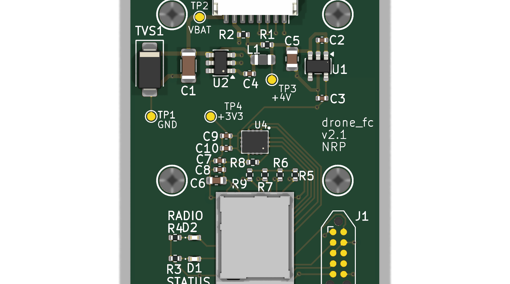
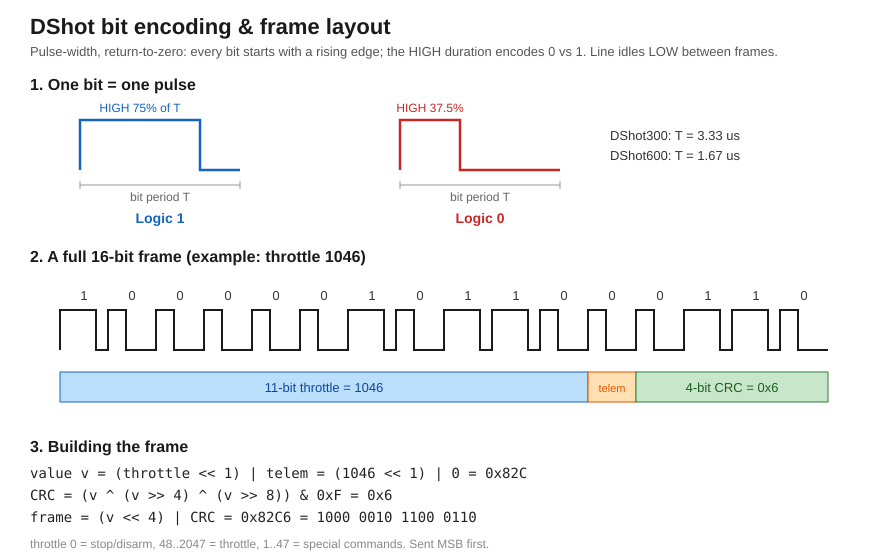
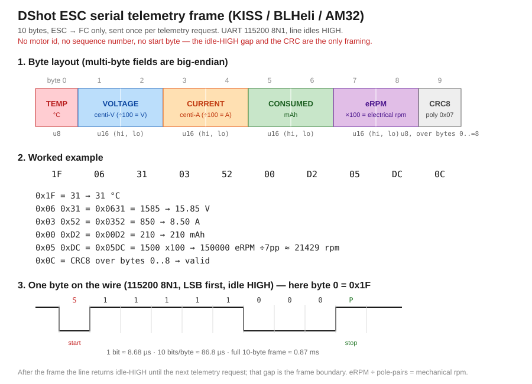
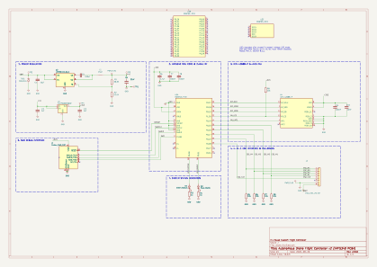

Building a Drone from Scratch
A learning project with AI
Neil Pate — November 2026
The drone is the artefact; understanding the whole stack end-to-end is the deliverable.
Why this project?
- Goal: learning, not building a competitive drone
- Own the entire stack — sensors, control, radio, electronics, mechanical
- Can AI augment an engineer in unfamiliar territory?
- Practice embedded Rust — I write, AI advises
The rules I set myself
- Roll our own firmware — no PX4 / ArduPilot
- I write the code. AI advises, reviews, does not implement.
- Real hardware only
- Document every decision — 29 ADRs and counting
The system
Controller
Commands → Telemetry ← Round trip 100 Hz All written from scratch in Rust
AI as a panel of expert advisors
Niche skills that would have taken months to acquire — or caused me to give up
Investigation
|
Development
|
The journey




Documenting the learnings
Every non-obvious thing learned became a short note — 11 topics from GPIO resets to CPU-load profiling


DShot bit pattern (left) and ESC telemetry frame (right) — drawn to understand protocols before implementing them
The custom PCB: an AI cautionary tale
- Attempt 1: specialist AI generated the schematic — Copilot caught most mistakes in review, but one slipped through to the vendor — respin
- Attempt 2: I drove KiCad myself, Copilot as verification companion throughout — much better
AI generating a design it can't test — dangerous.
AI reviewing a design you understand — valuable.
The v2 flight controller
nRF5340 • IMU • DShot • 4S power • USB • KiCad • turnkey PCBA

What was actually hard
Writing the code was not the hardest part.
- 1. Mechanical design — learned Fusion 360 from scratch, three airframe iterations
- 2. Physical build + PCB — wiring, soldering, weight distribution
- 3. Tuning the control system — correct maths that still won't fly
- 4. Writing firmware — the easiest of the four
War story: the M4 mystery
- Front-left motor always weaker — chased for weeks
- Suspected: motor, mount, propellers
- Root cause: uncalibrated analog PWM endpoints
- Switch to DShot (digital) — asymmetry vanished instantly
The code was correct. The bug was at the firmware–physics boundary.
War story: the roll oscillation
- ~3–4 Hz oscillation — survived every gain change
- Not the PID — the attitude filter's crossover sat on the control band
- One coefficient change (α 0.98 → 0.998) — oscillation collapsed
Wrong tool, wrong layer. No amount of gain tuning fixes an estimator bug.
Demo
Ground station • live telemetry • 3D attitude view • gamepad control • live gain tuning
What I learned
- AI is a force multiplier, not a replacement
- ADRs are underrated — forced early thinking, prevented rework
- The code is the easy part
Questions?